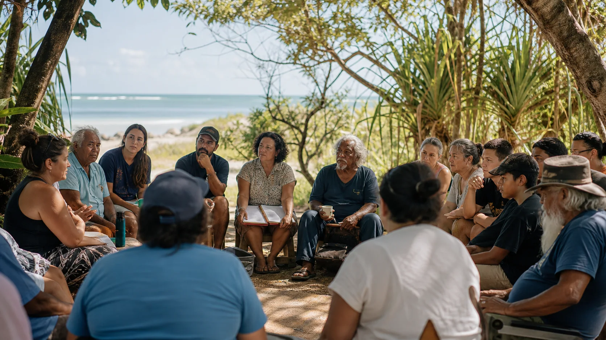

What would you use?
Which parts would you actually turn up for: sport, shade, markets, music, screen nights, quiet seats, visitor info, or something else?

Local say
This page treats local knowledge as design power. The best version of Ballow Road comes from people who know the ferry rhythm, the quiet hours, the youth gaps, the family needs, the cultural lines and the small things that make a place work.
Island intelligence
This page is asking for ideas, opinions, local memory and better options. Say what you would use, what would annoy you, what would make it worth backing, and what you would put there instead.
Which parts would you actually turn up for: sport, shade, markets, music, screen nights, quiet seats, visitor info, or something else?
Where could noise, traffic, parking, alcohol, timing, prices, rubbish or crowd behaviour go wrong?
Which residents, clubs, businesses, Elders, youth groups, ferry users, neighbours or visitors should be in the conversation?
Name it, point to the spot in the 360 viewer, and show the version you reckon fits: practical, funny, quiet, ambitious or weird.
Country and culture
Sport and markets can move quickly. Cultural knowledge, language, story, heritage, healing, filming on Country and cultural learning carry a different weight. Those parts belong with the people and organisations who carry that responsibility.
Public design room
The design phase works best in the open. There is no secret submissions box here and no form collecting personal data. This page maps who has a visible stake, what they can bring, and how the concept can improve before anyone tries to formalise it.
Questions with muscle
Noise, parking, money, kids, Elders, culture, safety, visitor pressure and who gets paid are not side issues. They are the design brief.
Young people, Elders, families, renters, retirees, volunteers, traders, disabled visitors, clubs and tourists.
Finish times, parking, lighting, sound, rubbish, alcohol boundaries, security and neighbour comfort.
Paid local roles, youth training, club income, market trade, visitor spend, wellbeing programs and real public use.
The strongest version of the plan shows exactly how local feedback changes the next move.